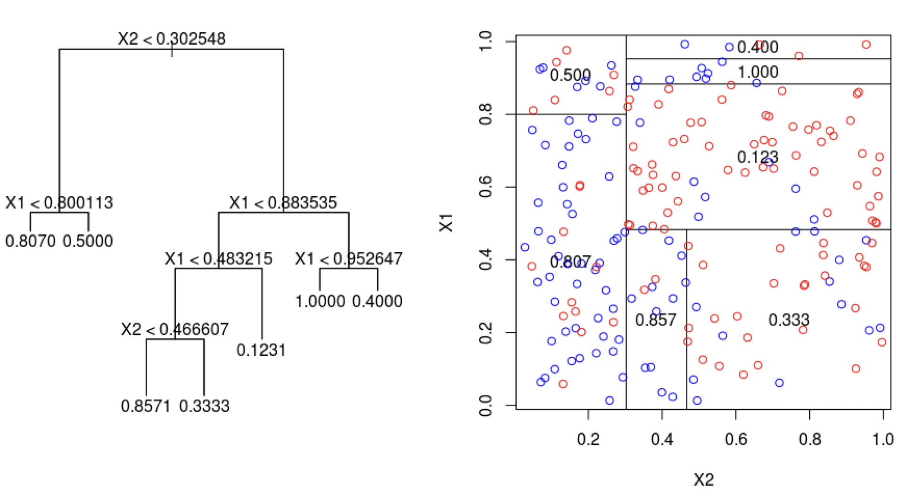
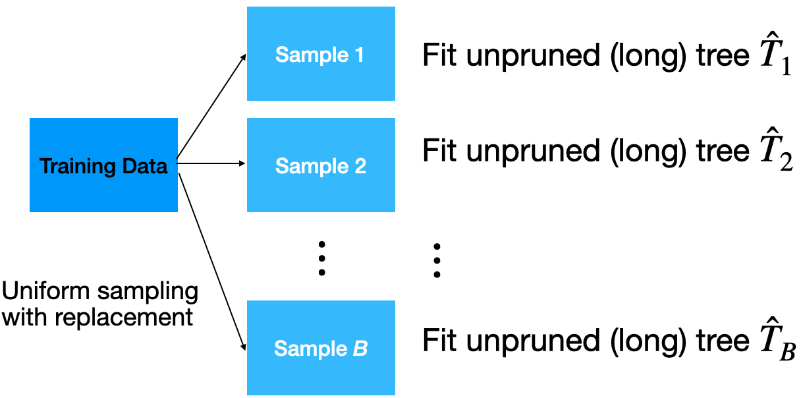
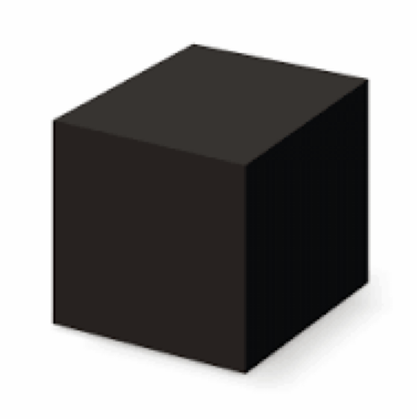

# Importing necessary libraries
import pandas as pd
import matplotlib.pyplot as plt
import seaborn as sns
from sklearn.model_selection import train_test_split
from sklearn.tree import DecisionTreeClassifier, plot_tree
from sklearn.neighbors import KNeighborsClassifier
from sklearn.preprocessing import StandardScaler
from sklearn.metrics import confusion_matrix, ConfusionMatrixDisplay
from sklearn.metrics import accuracy_score, recall_score, precision_scoreEnsamble Methods
IN2004B: Generation of Value with Data Analytics
Alan R. Vazquez
Department of Industrial Engineering
Agenda
- Bagging
- Random Forests
- Boosting
Bagging
Load the libraries
Before we start, let’s import the data science libraries into Python.
Here, we use specific functions from the pandas, matplotlib, seaborn and sklearn libraries in Python.
Decision trees
Simple and useful for interpretations.
Can handle continuous and categorical predictors and responses. So, they can be applied to both classification and regression problems.
Computationally efficient.

Limitations of decision trees
Deep trees have low bias but high variance.
Small trees have high bias but low variance.
Ensamble methods
We would like to have both low variability and low bias. To achieve this, we have two frameworks:
Bagging. Ensemble deep trees with low bias, then combat variance in some way.
- Quintessential method: Random Forests.
Boosting. Construct small trees with low variance, then combat bias.
Ensamble methods
We would like to have both low variability and low bias. To achieve this, we have two frameworks:
Bagging. Ensemble deep trees with low bias, then combat variance in some way.
- Quintessential method: Random Forests.
Boosting. Construct small trees with low variance, then combat bias.
Bootstrap samples
Bootstrap samples are samples obtained with replacement from the original sample. So, an observation can occur more than one in a bootstrap sample.
Bootstrap samples are the building block of the bootstrap method, which is a statistical technique for estimating quantities about a population by averaging estimates from multiple small data samples.
Bagging
Given a training dataset, bagging averages the predictions from decision trees over a collection of bootstrap samples.
Predictions
Let \(\mathbf{x} = (x_1, x_2, \ldots, x_p)\) be a vector of new predictor values. For classification problems with 2 classes:
Each classification tree outputs the probability for class 1 and 2 depending on the region \(\mathbf{x}\) falls in.
For the b-th tree, we denote the probabilities as \(\hat{p}^{b}_0(\boldsymbol{x})\) and \(\hat{p}^{b}_1(\boldsymbol{x})\) for class 0 and 1, respectively.
- Using the probabilities, a standard tree follows the Bayes Classifier to output the actual class:
\[\hat{T}_{b}(\boldsymbol{x}) = \begin{cases} 1, & \hat{p}^{b}_1(\boldsymbol{x}) > 0.5 \\ 0, & \hat{p}^{b}_1(\boldsymbol{x}) \leq 0.5 \end{cases}\]
- Compute the proportion of trees that output a 0 as
\[p_{bag, 0} = \frac{1}{B} \sum_{b=1}^{B} I(\hat{T}_{b}(\boldsymbol{x}) = 0).\]
- Compute the proportion of trees that output a 1 as:
\[p_{bag, 1} = \frac{1}{B}\sum_{b=1}^{B} I(\hat{T}_{b}(\boldsymbol{x}) = 1).\]
- Classify according to a majority vote between \(p_{bag, 0}\) and \(p_{bag, 1}\).
Implementation
How many trees? No risk of overfitting, so use plenty.
No pruning necessary to build the trees. However, one can still decide to apply some pruning or early stopping mechanism.
The size of bootstrap samples is n, but we can use a different size.
Example
TBD
Prediction importance
TBD
Advantages
Bagging will have about the same low bias of a tree, but should have less variability. Hence, it results in lower prediction errors.
The fact that, for each tree, not all of the original observations were used, can be exploited to produce an estimate of the accuracy for classification.
Limitations
Loss of interpretability: the final bagged classifier is not a tree, and so we forfeit the clear interpretative ability of a classification tree.
Computational complexity: we are essentially multiplying the work of growing (and possibly pruning) a single tree by B.
Fundamental issue: bagging a good model can improve predictive accuracy, but bagging a bad one can seriously degrade predictive accuracy.
Other issues
Suppose a variable is very important and decisive.
It will probably appear near the top of a large number of trees.
And these trees will tend to vote the same way.
In some sense, then, many of the trees are “correlated”.
This will degrade the performance of bagging.
- Bagging is unable to capture simple decision boundaries
Random Forest
Random Forest
Exactly as bagging, but…
- When splitting the nodes using the CART algorithm, instead of going through all possible splits for all possible variables, we go through all possible splits on a random sample of a small number of variables \(m\), where \(m < p\).
Random forests can reduce variability further.
Why does it work?
Not so dominant predictors will get a chance to appear by themselves and show “their stuff”.
This adds more diversity to the trees.
The fact that the trees in the forest are not (strongly) correlated means lower variability.
Tuning parameter
How do we set \(m\)?
- For classification, use \(m = \lfloor \sqrt{p} \rfloor\) and the minimum node size is 1.
In practice, sometimes the best values for these parameters will depend on the problem. So, we can treat \(m\) as a tuning parameter.
Note that if \(m = p\), we get bagging.
The final product is a black box
A black box. Inside the box are several hundred trees, each slightly different.
You put an observation into the black box, and the black box classifies it or predicts it for you.
Random Forest in Python

Tecnologico de Monterrey